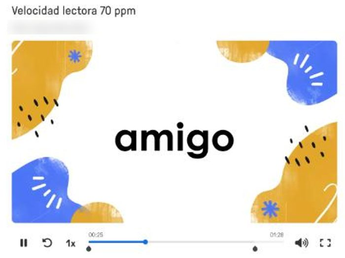
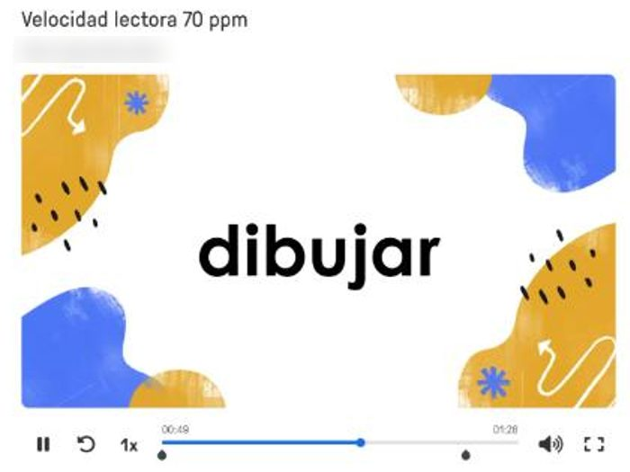
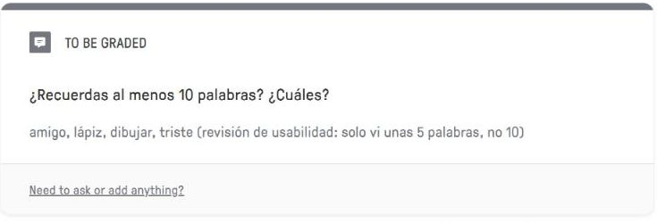
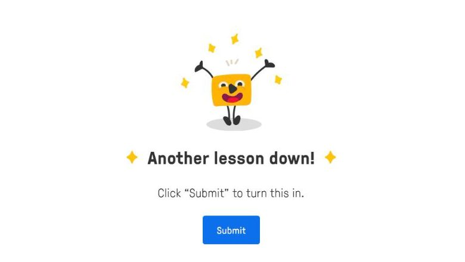
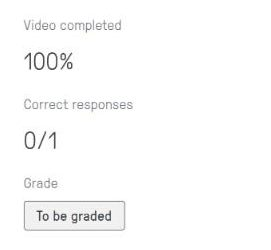
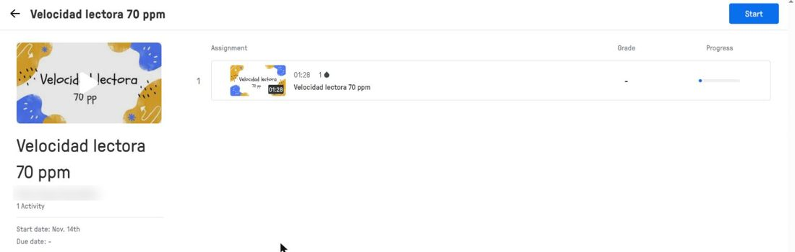
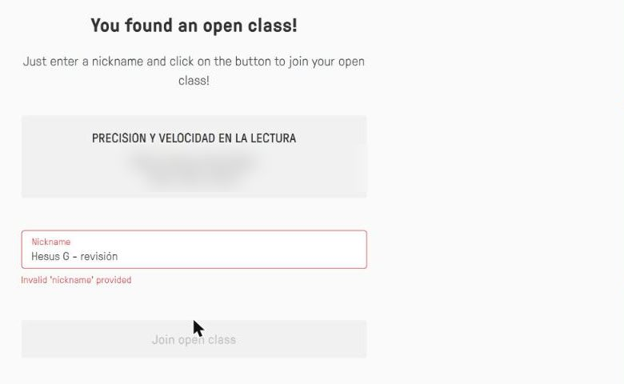

Revisión entre equipos · Hesus García · noviembre 2026
¿Qué se evalúa?
La actividad
«Velocidad lectora 70 ppm», una lección de Edpuzzle de otro equipo. Es un video de 1 minuto 28 segundos donde aparecen palabras una por una, con una nota al inicio y una pregunta al final: «¿Recuerdas al menos 10 palabras?».
La pregunta
¿Un alumno puede hacer la actividad sin ayuda, y la actividad mide lo que promete: leer en voz alta 70 palabras por minuto?
Cómo lo revisé
Entré como alumno con la liga de la clase abierta, hice la actividad completa y tomé una captura de cada problema.
Resultado en una frase
La actividad es fácil de abrir, pero no mide la velocidad lectora: el video va mucho más lento que la meta, nadie escucha la lectura y se puede saltar hasta el final.
3 problemas importantes2 problemas menores
Cómo leer cada problema
GravedadMenor estorba, pero se puede seguir. Importante afecta lo que el alumno aprende o el resultado.
¿De dónde viene?Edpuzzle: así funciona la plataforma. Configuración: una opción que el docente puede cambiar. Diseño: cómo se armó la actividad.
Principio de usabilidadLa regla de diseño que no se cumple, en palabras simples. Abajo va el nombre técnico (Nielsen y Norman).
Problemas encontrados
1
El video no va a 70 palabras por minuto
ImportanteDiseño
Qué pasó
El título promete 70 palabras por minuto, pero el video muestra una palabra cada 12 segundos más o menos: amigo en 0:25, lápiz en 0:37, dibujar en 0:49, triste en 1:03. Eso es cerca de 5 palabras por minuto. Además, la pregunta final pide recordar 10 palabras y en el video aparecen unas 5.
Para entender el concepto: la velocidad lectora es cuántas palabras lee una persona en voz alta en un minuto. A 70 palabras por minuto, cada palabra debería durar menos de un segundo en pantalla, no 12.
Principio que no se cumple
Lo que la actividad promete debe coincidir con lo que muestra.Nielsen: consistencia y estándares · Norman: correspondencia
Qué cambiaría
Mejora: ajustar el ritmo del video a la meta (una palabra cada 0.9 segundos, o mostrar renglones de texto) o cambiar el título y la pregunta para que coincidan con lo que se ve.

0:25 · «amigo»

0:49 · «dibujar», 24 segundos y dos palabras después
2
Nadie registra la lectura en voz alta
ImportanteDiseño
Qué pasó
La actividad pide leer en voz alta, pero si el profesor no está presente, nada registra la lectura. La única evidencia es una pregunta de memoria, así que la docente no puede saber la velocidad lectora real del alumno.
Principio que no se cumple
La actividad debe dejar ver lo que hizo el alumno.Nielsen: visibilidad del estado del sistema · Norman: retroalimentación
Qué cambiaría
Mejora: pedir que el alumno grabe su lectura. Edpuzzle tiene la opción «Allow audio responses» en las preguntas abiertas.

La única evidencia es una respuesta escrita de memoria.3
Se puede saltar el video hasta el final
ImportanteConfiguración
Qué pasó
Desde el segundo 0 di clic en 1:17 y la actividad se marcó como «Video completed 100%» sin ver las palabras. En un ejercicio de lectura eso invalida la práctica.
Principio que no se cumple
La actividad debe impedir los atajos que arruinan el ejercicio.Nielsen: prevención de errores · Norman: restricciones
Qué cambiaría
Mejora: activar «Prevent skipping» en la configuración de la asignación.

Después de saltar a 1:17, la lección ya aparece como terminada.

«Video completed 100%»
4
La asignación no tiene instrucciones
MenorConfiguración
Qué pasó
Antes de dar Start, el alumno no sabe qué se espera de él: no hay instrucciones en la asignación.
Principio que no se cumple
El alumno debe ver qué hacer, no adivinarlo.Nielsen: reconocer antes que recordar · Norman: señales y descubribilidad
Qué cambiaría
Mejora: agregar instrucciones breves: leer en voz alta, cuánto dura y qué se entrega.

Portada de la asignación: título, botón Start y nada más.5
Un apodo con acento no deja entrar
MenorEdpuzzle
Qué pasó
Al entrar a la clase abierta, el apodo «Hesus G - revisión» se rechaza con el mensaje «Invalid 'nickname' provided», sin decir qué está mal. Sin el acento («revision») sí entra.
Principio que no se cumple
Un error debe explicar qué pasó y cómo arreglarlo.Nielsen: prevención de errores · Norman: retroalimentación y restricciones
Qué cambiaría
Mejora: la docente puede avisar «escribe tu nombre sin acentos» junto a la liga. Edpuzzle debería decir qué caracteres se permiten.

El mensaje no dice que el problema es el acento.
Qué cambiaría primero y cómo lo comprobaría
Después del cambio, otra persona repetiría la misma tarea para ver si el problema desaparece.
Problema
Cambio
Qué espero
Cómo lo pruebo
El ritmo no es de 70 ppm ni hay 10 palabras
Rehacer el video al ritmo de la meta, o cambiar título y pregunta
El alumno puede responder lo que se le pide y el ejercicio mide lo que promete
«Haz el ejercicio de lectura y dime cuántas palabras leíste.»
No queda claro que la respuesta se guardó
Poner la pregunta al final del video, con un mensaje de la docente y la interfaz en español
El alumno reconoce que su respuesta quedó registrada
«Contesta la pregunta del video y dime si tu respuesta quedó guardada.»
Se puede saltar el video
Activar «Prevent skipping» y agregar instrucciones
Todos los alumnos ven la secuencia completa de palabras
«Intenta terminar la actividad lo más rápido posible.»
Pendiente: prueba con usuarios
Esta revisión la hice yo solo, como alumno. El siguiente paso es observar a otras personas haciendo estas tareas, sin ayudarles:
Entra a la clase con la liga que te compartió tu maestra y escribe tu nombre como apodo.
Haz el ejercicio de lectura y al terminar dime cuántas palabras leíste.
Contesta la pregunta del video y dime si tu respuesta quedó guardada.
Entrega la actividad y busca dónde ves tu resultado.